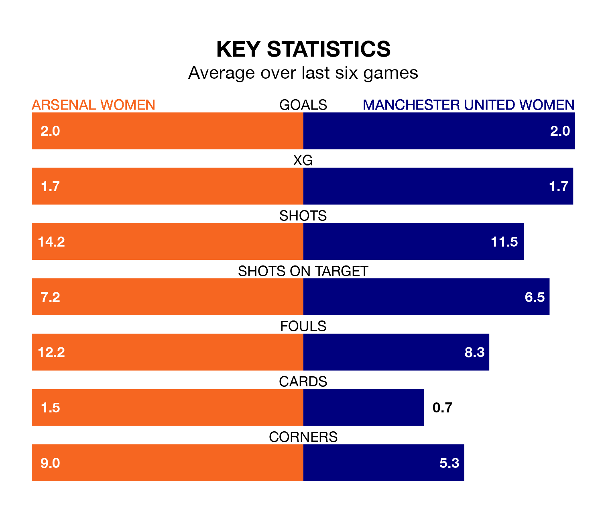

Arsenal Women host Manchester United Women in Saturday lunchtime's match at Meadow Park looking to bounce back from defeat last time out in FA Women's Super League.
The Gunners, who sit third in the league after 13 games, fell to a 2-1 away defeat to West Ham United Women on February 4.
They face a Manchester United side who picked up a win in their last match, a 2-0 victory against Brighton and Hove Albion Women, and who sit fourth in the table.
With 30 goals in 13 games so far this season, Manchester United are the league's third-highest scorers with 2.3 goals per game. And they are conceding fewer than average, letting in 15 goals at a rate of 1.2 per game.
Arsenal are also above average scorers, with 2.2 goals per game, compared to a league average of 1.6. They have conceded 1.0 goal per game.
In Mary Earps, the Red Devils can rely on one of the league's safest pair of hands. She has kept five clean sheets in her 13 appearances this season, and only one other 'keeper – Manchester City Women's Khiara Keating – has been able to prevent the opposition scoring on more occasions in FA Women's Super League.
In the Gunners's net, Manuela Zinsberger has three clean sheets in 12 games.
In the last 10 years, Arsenal and Manchester United have played each other on 10 occasions. They won four each, and they drew twice.
On average, the Gunners scored 1.2 goals and the Red Devils 1.0 in those matches.
Their last meeting was on October 6, when they played out a 2-2 draw.
The hosts are in reasonable form in FA Women's Super League, with four wins and two losses from their last six games.
And also with four wins and two losses over that period, the away side's form is identical – they have both taken 12 points from 18.
Updated: 11:47 (UTC), 05/02/24